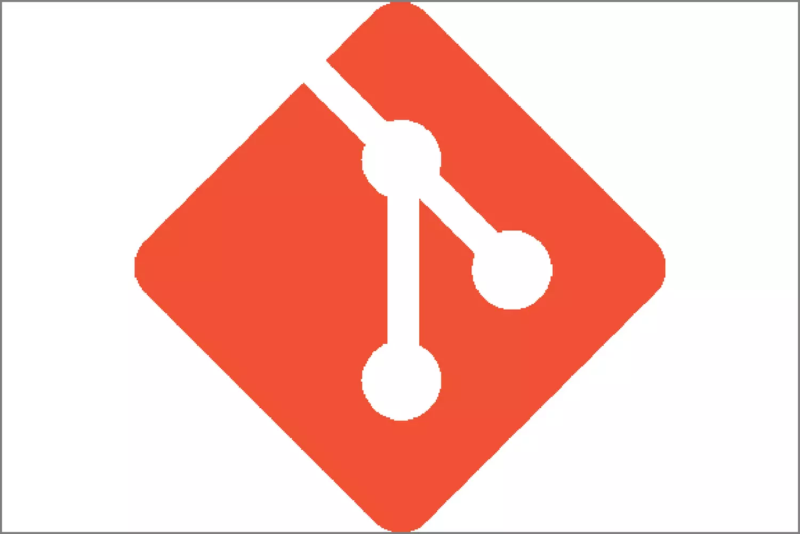
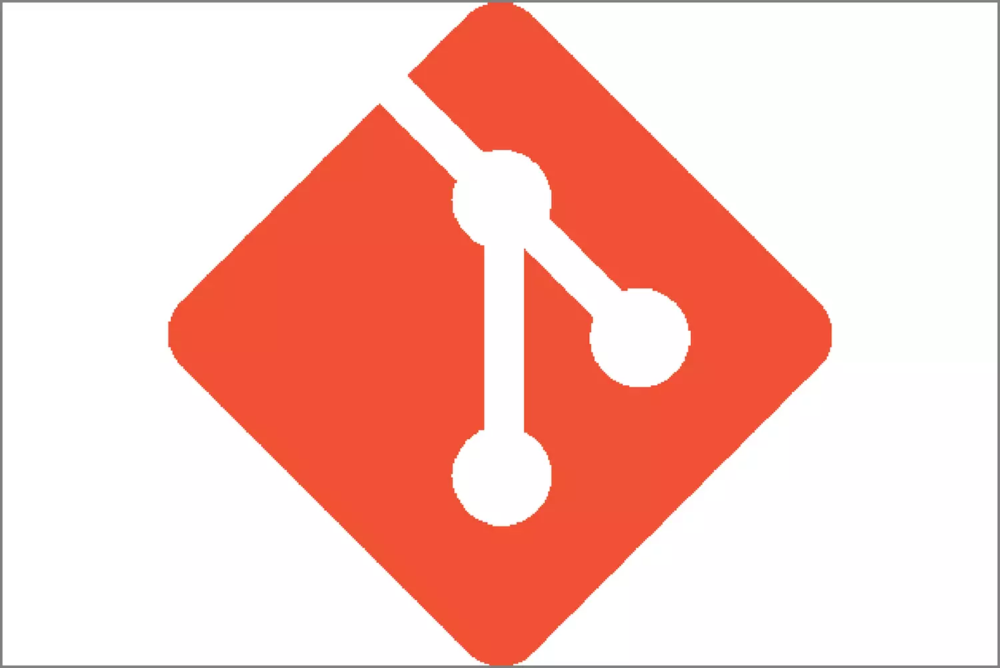

Hello I'm Roman. I'm passionate about AI, software development
topics, sport 👋
I've done my first internship at
Lab-STICC CNRS
: a french marine research center.
I worked on prediction of weather events with machine learning
algorithms.
The aim of my team was to develop softwares integrating AI models.
During my Software Engineer journey, I've learned some technologies :
Here are some of my personal projects 📚
PneumonIA
: a software for pneumonia detection on XRay images
 
